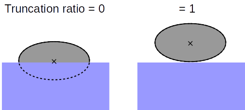
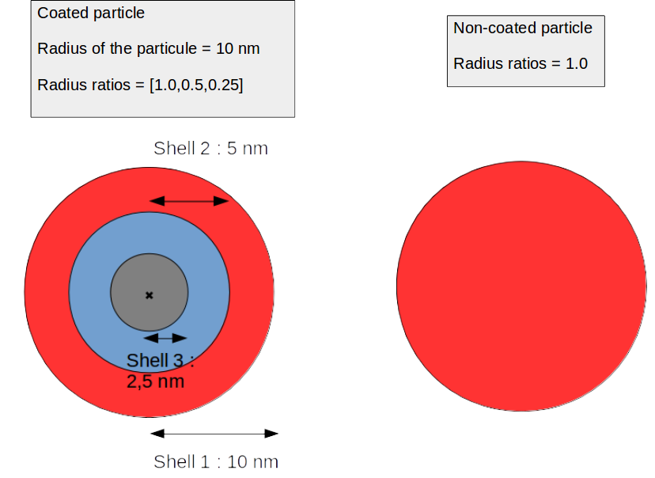
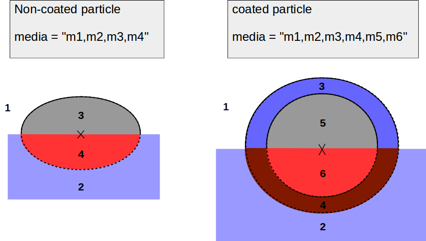

Create and configure your simulation¶
Use the GranFilm function to create a new simulation with the wanted parameters.
Example: gf = GranFilm(param1 = value1,param2 = value2,...) will initialize a simulation named gf.
You only need to precise the value of the parameters that you want to set.
Default values will be assigned to the other ones.
You can also import your configuration from an external input file. In this file, set a parameter by writing name_of_the_parameter = value in one line of the input file.
Example: gf = GranFilm(param_file = '/path/to/input_file').
Here the program set the parameters according to those you defined in the input file, the others will take default values.
When you run Init_GranFilm.py for the first time, an input file with all the parameters and their default values has been created in the GranFilm package.
The python variable input_file contains the path to this default input file so you can change some parameters of this file and type gf=GranFilm(param_file=input_file) to import the configuration you want.
Here is a description of the most important parameters that you can set.
-
GranFilm(radius=8.0, truncation_ratio=0.0, radius_ratios=[1.0], media=" air , mgo , ag , mgo ", broadening_par=0.0, broadening_perp=0.0, theta=45.0, phi=0.0, energy_range=[ 1.5 , 5 ], pol='p', arrangement="Lattice", lattice_type="Square", island_island="None", lattice_constant=20.0, multip_pos_rat=0.0, number_en_points=300, multip_order=30, lower_constraint=[ 0.0 , 0.0 , 0.0 ], upper_constraint=[ 1e10 , 1.0 , 1e10 ], sigma=0.005, freeze_broadening=False, points_file="None", energy=[2.2], area_ratio_pot=2.0, number_pot_points=300, materials=[ "air" , "mgo" , "ag" ], extra_parameters=[ {} , {} , {} ], param_file=None)¶ Synopsis: Initializes a new simulation and its parameters.
Parameters: - radius (float or float list) – The radius of the particles (nm). A float for a sphere or a
list = [ radius parallel to the interface , radius perpendicular to the interface ] for a spheroidal particle. - truncation_ratio (float) – [distance center of the particle - substrate] / radius
Supported values: truncation_ratio in [0,1] for a non-coated particleand in [0,radius_inner_shell / radius_outer_shell] for a coated one
Example:

- radius_ratios (float list) – For a coated particle we can define for each layer the radius ratio as [radius of the layer] / [radius of the particle]
The radius ratios is then the list of the radius ratio from the outer shell to the core.
Example:

- media (string) – A string with the materials used for the simulation, separated by a coma -> media = “m1,m2,m3,m4, ...”
m1 is the material from which the incident light comes, m2 is the substrate, m3 and m4 correspond to the part of the outer shell which is above and below the substrate, and so on for the inner shells.
Note: The SOPRA database must contain the dielectric functions of thegiven materials.
Example:

- materials (list of string) – a list of strings for each material in media. If media = ” air , mgo , ag , mgo ” then materials = [ “air” , “mgo” , “ag” ]
- theta (float) – the angle of incidence
- energy_range (float list) – a list with the minimum / maximum of the energy range (in eV) on which GranFilm will provide data
-> energy_range = [energy_min,energy_max]
Note: An error can occur if the refractive index of one of the materialused is not defined over this energy range in the SOPRA_DataBase.Use gf.param.Epsilon(material) to get the energy range on which thematerial can be used
- lattice_type (string) – the type of the 2D lattice -> ‘Square’ or ‘Hexagonal’
- lattice_const (float) – the distance between two particles of the lattice
- island_island (string) – The nature of the interaction between the particles of the lattice.
‘None’ -> the interaction between the particle is not taken into account (valid when the particles are far from each other, which is almost always the case)
‘Dipole’ / ‘Quadripole’ -> Each particle interacts with the others as a dipole / quadripole - points_file (string) – the path to the text file with all the points where GranFilm will calculate the electric potential.
“None” if you doesn’t want the potential, “classic” if you want the potential in the area around the particle and “surface” for the error on the calculation of the potential. - energy (float list) – A list containing the energy at which the scalar potential will be calculated.
- area_ratio_pot (float) – For the “classic” points_file, the potential is calculated in a rectangle (area_ratio_pot*radius_parallel , area_ratio_pot*radius_normal)
- number_pot_points (int) – The potential is calculated on a number_pot_points ² grid
- number_en_points (int) – The number of points in the energy range
- multip_order (int) – The multipole order i.e the level of the troncation in the calculation of the potential. The higher is the multipole order the better is the precsion of the simulation.
- radius (float or float list) – The radius of the particles (nm). A float for a sphere or a
{kind=link}
{kind=link}
{kind=link}
Once you’ve initialized a new simulation, you can use the “gf.param” object as a python dictionary to handle the parameters:
- use
gf.param["name_of_the_parameter"]to get the wanted value- use
gf.param["name_of_the_parameter"] = valueto set this parameter
The command gf.param() prints all the parameters of the simulation
Example:
>>> gf=GranFilm()
>>> gf.param() # print the configuration of the system (here the default configuration)
>>>
>>>&Global
>>> granfilm_root = '/home/alexis/Bureau/GranFilm_Package/GranFilm_Linux'
>>> sopra_root = '/home/alexis/Bureau/GranFilm_Package/SOPRA_DataBase/'
>>>/
>>>
>>>&Source
>>> theta = 0.0
>>> phi = 0.0
>>> pol = 'p'
>>> energy_range = [1.5, 5]
>>>/
>>>
>>>&Geometry
>>> radius = 8.0
>>> truncation_ratio = 0.0
>>> broadening_par = 0.0
>>> broadening_perp = 0.0
>>> radius_ratios = [1.0]
>>> media = "air, mgo,ag,mgo"
>>>/
>>>
>>>&Interaction
>>> arrangement = 'Lattice'
>>> lattice_type = 'Square'
>>> island_island = 'None'
>>> lattice_constant = 20.0
>>>/
>>>
>>>&Curvefitting
>>> lower_constraint = [0.0, 0.0, 0.0]
>>> upper_constraint = [10000000000.0, 1.0, 10000000000.0]
>>> sigma = 0.005
>>> freeze_broadening = False
>>>/
>>>
>>>&Potential
>>> points_file = 'classic'
>>> energy = [2.2]
>>> area_ratio_pot = 2.0
>>> number_pot_points = 300
>>>/
>>>
>>>&Numerics
>>> multip_pos_rat = 0.0
>>> number_en_points = 300
>>> multip_order = 30
>>>/
>>>
>>>&Media
>>> materials = ['air', 'mgo', 'ag']
>>> extra_parameters = [{}, {}, {}]
>>>/
>>>
>>> gf.param["radius"]=6.0 # Set the radius to 6.0 nanometers
>>> gf.param["radius"]
6.0 # Now the radius = 6.0 nm